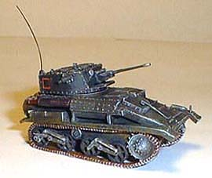
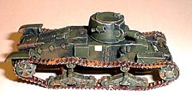
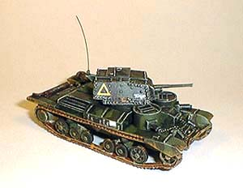
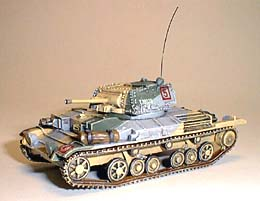
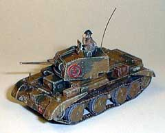

RAFM produced this 1/72 metal model. The colors are those of the British Expeditionary Force in France.

The 1/76 resin kit is produced by CROMWELL MODELS, and is shown sporting the bronze green/green camouflage pattern which was the fashion for the British Expeditionary Force.

The 1/76 metal model is made by HINCHLIFFE/SKYTREX. A bit rough and requiring a bit of flash clean-up, but a nice addition to the collection. Painted in BEF colors of 1940.

A further development of the A9, the A10 Cruiser Tank Mk II was the first British tank which featured up-armouring in the form of additional armour plates bolted onto the turret and hull. The A10 saw action in France in 1940 and in the Western Desert until late 1941.This metal model is made by HINCHLIFFE/SKYTREX in 1/76 scale, and consists of four parts; hull, turret, and two track assemblies. The turret bolts are a bit oversized, but overall the model is very nice.

OSTMODELS made this 1/76 resin replica (produced under license from Cromwell models). The camouflage scheme is based on an illustration in one of my books, supposedly representing a unit in France during the 1940 campaign. I don't think the brown color was accurate, however. The vehicle should probably be painted in two shades of green.
On a sad note, this particular model was destroyed when a vandal infiltrated the museum grounds. It is beyond repair, but we hope to replace it in the future.